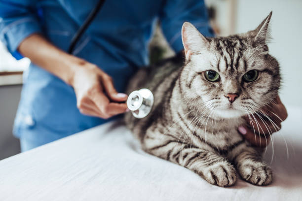

Cat Health Gallery


General Health
Maintaining your cat’s health is an important part of responsible pet care, and it starts with understanding their needs and working with a trusted veterinarian. Regular wellness exams help monitor your cat’s overall condition, catch potential health issues early, and ensure they receive appropriate preventive care. Staying current on vaccines, parasite prevention, and dental care can make a big difference in your cat’s long-term comfort and quality of life.
Everyday Care Tips
- Provide fresh water daily and a balanced diet appropriate for your cat’s age.
- Keep the litter box clean and watch for changes in bathroom habits.
- Brush your cat regularly and check for fleas, ticks, or skin irritation.
- Schedule routine vet checkups (even if your cat seems fine).
Signs You Should Call a Vet
If your cat stops eating, hides more than usual, seems lethargic, vomits repeatedly, or has trouble breathing, it’s best to contact a veterinarian. Cats are good at hiding pain, so sudden behavior changes can be a clue that something is wrong.